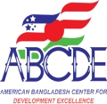
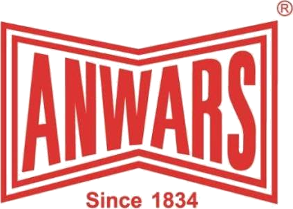
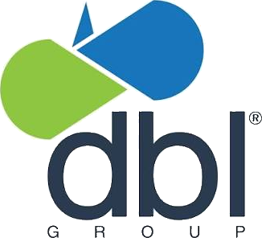
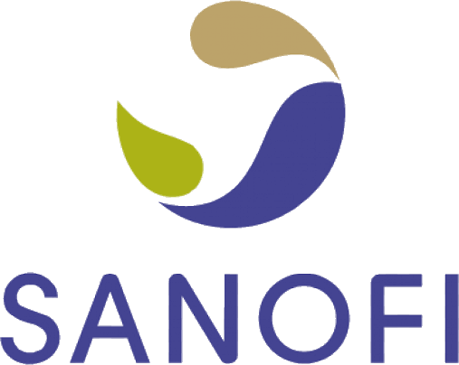
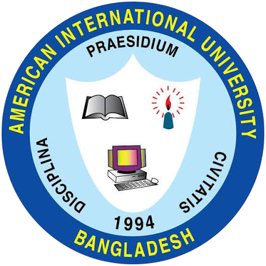
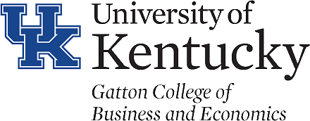

Executive Portfolio
KAZI RAKIBUDDINAHMED
CHIEF EXECUTIVE OFFICER & FOUNDER, ABCDE
HUMAN CAPITAL LEADER, TRAINER, RESEARCHER & ORGANIZATIONAL DEVELOPMENT PROFESSIONAL
A Bangladeshi-American Human Capital Management and Development professional with 35+ years of experience across Bangladesh, Saudi Arabia, and the USA.
People. Purpose. Power. Process. Performance. Profit.
35+ YearsHuman Capital Excellence
Current Leadership
Leadership across enterprise, learning, and professional communities.
These roles reflect an ongoing legacy of contribution, influence, and institution-building.
Chief Executive Officer & Founder
Leads the American Bangladesh Center for Development Excellence as a platform for human capital, business development, learning, and organizational excellence.
View Profile →Life Trustee & Secretary General
Provides institutional leadership to Bangladesh Organization for Learning & Development, with previous service as Trustee and Treasurer.
View Affiliations →Executive Board & Life Member
Executive Board and Life Member of American Alumni Association, Bangladesh, with earlier elected service as Treasurer.
View Affiliations →A leadership profile built on contribution, recognition, and institutional impact.
Kazi Rakibuddin Ahmed is widely recognized for helping shape modern HR practice in Bangladesh through executive leadership, learning, organization development, research, and professional service.
His work spans human resources strategy, learning and development, organization development, performance management, compensation and benefits, recruitment, consulting, teaching, and applied research.
This single-page website is designed as an executive achievement profile, presenting his strategic roles, achievements, and long-term contribution to human capital management.
Core Expertise
Human capital strategy translated into measurable organizational capability.
HR Strategy & Leadership
Enterprise HR leadership, workforce strategy, policy, performance, and organizational alignment.
Learning & Development
Leadership development, training architecture, executive capability, and professional growth.
Organization Development
Culture, process, transformation, talent systems, and organizational effectiveness.
Research & Innovation
Applied HR research, recruitment methodology, consulting, and evidence-based practice.
Experience
A distinguished career across consulting, industry, hospitality, banking, multinational companies, and academia.
Roles are presented in reverse chronological order using the dates, titles, and organizations supplied for this profile.

Chief Executive Officer
ABCDE – American Bangladesh Center for Development Excellence · Full-time
ABCDE brings together highly qualified global experts in their respective fields from the USA, Bangladesh, the UK, the UAE, Italy, Canada, Australia, and other countries. It operates as a “One Stop People and Profit Solution Center.”
ABCDE.COM.BD →Head of HR
KAFCO

Chief Human Resources Officer
Anwar Group of Industries

HRD
DBL Group
Director HR
Best Air
Director of Human Capital Department
Pan Pacific Sonargaon Hotel

Head of Human Resources
Sanofi
Human Resources Development Manager
Unilever
Training Manager
BAT

Assist Professor
AIUB
PEPSIMar 1994 – Mar 1997 · 3 yrs 1 mo
AGM, Training and Development
Pepsi Cola – Pizza Hut Division
Training Manager
United Saudi Commercial Bank
KCBFeb 1990 – Feb 1993 · 3 yrs 1 mo
Business Faculty
Kentucky College of Business
Achievements
Achievements and distinctions recognized nationally and internationally.
These milestones reflect original HR thinking, professional excellence, and long-standing contribution to the field.
R3 / R-Cube
Rakib’s Recruitment Rule
Recipient of a Government of Bangladesh patent for an original work in HR focused on recruitment and selection methodology. This innovation remains one of the defining contributions of his professional legacy.
The profile preserves both references used for this work: “Rakib’s Recruitment Rule” and the alternate name “R-Cube”.
100 Most Influential Global HR Professionals
International citation and recognition received in Mumbai, India, highlighting his standing within the global HR profession.
Corporate Personality · Trainer · Researcher
A multidimensional professional identity built across executive leadership, teaching, research, consulting, and institutional service.
Education & Knowledge Sharing
Academic preparation supporting a distinguished human capital career.
Business education and teaching experience reinforce the practical depth of his leadership journey.

MBA in Marketing
University of Kentucky, USA.
BBA in Human Resource Management
Kentucky State University and the University of Kentucky, USA.
Teaching Experience
Academic practice connected to executive experience and knowledge sharing.
His teaching experience includes BBA and MBA programs, enabling him to translate senior corporate practice into structured learning for future professionals.
- Adjunct Faculty, MBA Program, University of Liberal Arts Bangladesh (ULAB)
- Full-Time Faculty, BBA Program, American International University-Bangladesh (AIUB)
- Full-Time Faculty, BBA Program, Kentucky College of Business
Affiliations
Leadership and membership across learning, alumni, HR, and business communities.
His affiliations demonstrate sustained service, community leadership, and contribution to professional institutions.
Engagement
Contact for speaking, advisory, institutional, and professional engagement.
This section is intended for invitations, strategic conversations, collaboration opportunities, and professional correspondence.
Kazi Rakibuddin Ahmed
Write a message
This static website does not store form submissions. It opens your email application with the message pre-filled for direct correspondence.